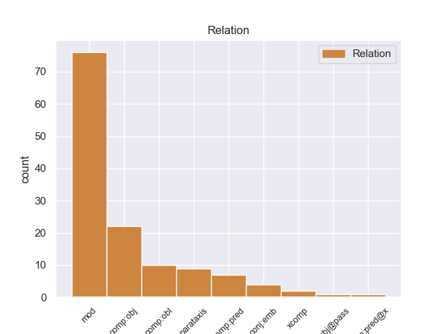
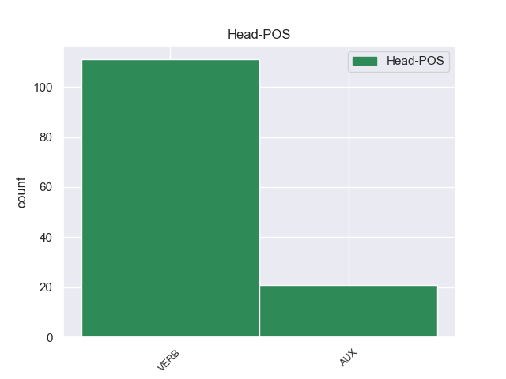

Distribution of features within this leaf



Agreement Rules sorted by frequency.
- When the dependent token is the modifer(mod) of the head token, and the dependent token is VERB.
1 Κύριε _ _ _ _ 0 _ _ _
2 Πρόεδρε _ _ _ _ 0 _ _ _
3 , _ _ _ _ 0 _ _ _
4 οι _ _ _ _ 0 _ _ _
5 υπό _ _ _ _ 0 _ _ _
6 συζήτηση _ _ _ _ 0 _ _ _
7 υποθέσεις _ _ _ _ 0 _ _ _
8 αφορούν _ _ _ _ 0 _ _ _
9 πολύ _ _ _ _ 0 _ _ _
10 σοβαρές _ _ _ _ 0 _ _ _
11 κατηγορίες _ _ _ _ 0 _ _ _
12 , _ _ _ _ 0 _ _ _
13 οι _ _ _ _ 0 _ _ _
14 οποίες _ _ _ _ 0 _ _ _
15 βαρύνουν _ _ _ _ 0 _ _ _
16 δύο _ _ _ _ 0 _ _ _
17 βουλευτές _ _ _ _ 0 _ _ _
18 του _ _ _ _ 0 _ _ _
19 Σώματος _ _ _ _ 0 _ _ _
20 και _ _ _ _ 0 _ _ _
21 αναφέρονται αναφέρω VERB _ Aspect=Imp|Mood=Ind|Number=Plur|Person=3|Tense=Pres|VerbForm=Fin|Voice=Pass 0 _ _ _
22 σ _ _ _ _ 0 _ _ _
23 την _ _ _ _ 0 _ _ _
24 πρώτη _ _ _ _ 0 _ _ _
25 σελίδα _ _ _ _ 0 _ _ _
26 της _ _ _ _ 0 _ _ _
27 αιτιολογικής _ _ _ _ 0 _ _ _
28 έκθεσης _ _ _ _ 0 _ _ _
29 της _ _ _ _ 0 _ _ _
30 έκθεσής _ _ _ _ 0 _ _ _
31 μου _ _ _ _ 0 _ _ _
32 , _ _ _ _ 0 _ _ _
33 σ _ _ _ _ 0 _ _ _
34 την _ _ _ _ 0 _ _ _
35 οποία _ _ _ _ 0 _ _ _
36 συνιστώ συνιστώ VERB _ Aspect=Imp|Mood=Ind|Number=Sing|Person=1|Shared=Yes|Tense=Pres|VerbForm=Fin|Voice=Act 21 mod _ _
37 σ _ _ _ _ 0 _ _ _
38 τους _ _ _ _ 0 _ _ _
39 συναδέλφους _ _ _ _ 0 _ _ _
40 να _ _ _ _ 0 _ _ _
41 ρίξουν _ _ _ _ 0 _ _ _
42 μια _ _ _ _ 0 _ _ _
43 ματιά _ _ _ _ 0 _ _ _
44 . _ _ _ _ 0 _ _ _
1 από _ _ _ _ 0 _ _ _
2 τα _ _ _ _ 0 _ _ _
3 δε _ _ _ _ 0 _ _ _
4 έγγραφα _ _ _ _ 0 _ _ _
5 της _ _ _ _ 0 _ _ _
6 υπόθεσης _ _ _ _ 0 _ _ _
7 προκύπτει προκύπτω VERB _ Aspect=Imp|Mood=Ind|Number=Sing|Person=3|Tense=Pres|VerbForm=Fin|Voice=Act 0 _ _ _
8 ότι _ _ _ _ 0 _ _ _
9 δεν _ _ _ _ 0 _ _ _
10 φαίνεται φαίνω VERB _ Aspect=Imp|Mood=Ind|Number=Sing|Person=3|Tense=Pres|VerbForm=Fin|Voice=Pass 7 comp:obj _ _
11 να _ _ _ _ 0 _ _ _
12 έχει _ _ _ _ 0 _ _ _
13 ληφθεί _ _ _ _ 0 _ _ _
14 υπόψη _ _ _ _ 0 _ _ _
15 η _ _ _ _ 0 _ _ _
16 σύσταση _ _ _ _ 0 _ _ _
17 να _ _ _ _ 0 _ _ _
18 διαβιβαστεί _ _ _ _ 0 _ _ _
19 η _ _ _ _ 0 _ _ _
20 αίτηση _ _ _ _ 0 _ _ _
21 άρσης _ _ _ _ 0 _ _ _
22 της _ _ _ _ 0 _ _ _
23 ασυλίας _ _ _ _ 0 _ _ _
24 μόνον _ _ _ _ 0 _ _ _
25 επί _ _ _ _ 0 _ _ _
26 τη _ _ _ _ 0 _ _ _
27 βάσει _ _ _ _ 0 _ _ _
28 ακριβέστερου _ _ _ _ 0 _ _ _
29 προσδιορισμού _ _ _ _ 0 _ _ _
30 όσον _ _ _ _ 0 _ _ _
31 αφορά _ _ _ _ 0 _ _ _
32 τους _ _ _ _ 0 _ _ _
33 τόπους _ _ _ _ 0 _ _ _
34 και _ _ _ _ 0 _ _ _
35 τα _ _ _ _ 0 _ _ _
36 πρόσωπα _ _ _ _ 0 _ _ _
37 που _ _ _ _ 0 _ _ _
38 εμπλέκονται _ _ _ _ 0 _ _ _
39 σ _ _ _ _ 0 _ _ _
40 την _ _ _ _ 0 _ _ _
41 υπόθεση _ _ _ _ 0 _ _ _
42 . _ _ _ _ 0 _ _ _
1 Εάν _ _ _ _ 0 _ _ _
2 έχω _ _ _ _ 0 _ _ _
3 να _ _ _ _ 0 _ _ _
4 κάνω _ _ _ _ 0 _ _ _
5 κάποια _ _ _ _ 0 _ _ _
6 κριτική _ _ _ _ 0 _ _ _
7 σ _ _ _ _ 0 _ _ _
8 την _ _ _ _ 0 _ _ _
9 ομιλία _ _ _ _ 0 _ _ _
10 σας _ _ _ _ 0 _ _ _
11 , _ _ _ _ 0 _ _ _
12 αυτή _ _ _ _ 0 _ _ _
13 δεν _ _ _ _ 0 _ _ _
14 αφορά αφορώ VERB VERB Aspect=Imp|Mood=Ind|Number=Sing|Person=3|Tense=Pres|VerbForm=Fin|Voice=Act 0 _ _ _
15 το _ _ _ _ 0 _ _ _
16 περιεχόμενο _ _ _ _ 0 _ _ _
17 - _ _ _ _ 0 _ _ _
18 ουσιαστικά _ _ _ _ 0 _ _ _
19 συμφωνώ συμφωνώ VERB VERB Aspect=Imp|Mood=Ind|Number=Sing|Person=1|Tense=Pres|VerbForm=Fin|Voice=Act 14 parataxis _ _
20 με _ _ _ _ 0 _ _ _
21 κάθε _ _ _ _ 0 _ _ _
22 σας _ _ _ _ 0 _ _ _
23 λέξη _ _ _ _ 0 _ _ _
24 - _ _ _ _ 0 _ _ _
25 αλλά _ _ _ _ 0 _ _ _
26 με _ _ _ _ 0 _ _ _
27 το _ _ _ _ 0 _ _ _
28 γεγονός _ _ _ _ 0 _ _ _
29 ότι _ _ _ _ 0 _ _ _
30 διέκρινα _ _ _ _ 0 _ _ _
31 , _ _ _ _ 0 _ _ _
32 ίσως _ _ _ _ 0 _ _ _
33 , _ _ _ _ 0 _ _ _
34 ένα _ _ _ _ 0 _ _ _
35 στοιχείο _ _ _ _ 0 _ _ _
36 εμμονής _ _ _ _ 0 _ _ _
37 σ _ _ _ _ 0 _ _ _
38 την _ _ _ _ 0 _ _ _
39 " _ _ _ _ 0 _ _ _
40 αποστολή _ _ _ _ 0 _ _ _
41 μας _ _ _ _ 0 _ _ _
42 " _ _ _ _ 0 _ _ _
43 . _ _ _ _ 0 _ _ _
1 Θεωρώ θεωρώ VERB _ Aspect=Imp|Mood=Ind|Number=Sing|Person=1|Tense=Pres|VerbForm=Fin|Voice=Act 0 _ _ _
2 - _ _ _ _ 0 _ _ _
3 και _ _ _ _ 0 _ _ _
4 λέγοντας _ _ _ _ 0 _ _ _
5 αυτά _ _ _ _ 0 _ _ _
6 απευθύνομαι απευθύνομαι VERB _ Mood=Ind|Number=Sing|Person=1|Tense=Pres|VerbForm=Fin|Voice=Mid 1 comp:obl _ _
7 και _ _ _ _ 0 _ _ _
8 σ _ _ _ _ 0 _ _ _
9 το _ _ _ _ 0 _ _ _
10 Συμβούλιο _ _ _ _ 0 _ _ _
11 , _ _ _ _ 0 _ _ _
12 κύριε _ _ _ _ 0 _ _ _
13 Ramon _ _ _ _ 0 _ _ _
14 de _ _ _ _ 0 _ _ _
15 Miguel _ _ _ _ 0 _ _ _
16 , _ _ _ _ 0 _ _ _
17 ότι _ _ _ _ 0 _ _ _
18 τούτο _ _ _ _ 0 _ _ _
19 ήταν _ _ _ _ 0 _ _ _
20 μια _ _ _ _ 0 _ _ _
21 ευτυχής _ _ _ _ 0 _ _ _
22 στιγμή _ _ _ _ 0 _ _ _
23 για _ _ _ _ 0 _ _ _
24 τα _ _ _ _ 0 _ _ _
25 τρία _ _ _ _ 0 _ _ _
26 θεσμικά _ _ _ _ 0 _ _ _
27 όργανα _ _ _ _ 0 _ _ _
28 , _ _ _ _ 0 _ _ _
29 δηλαδή _ _ _ _ 0 _ _ _
30 την _ _ _ _ 0 _ _ _
31 Επιτροπή _ _ _ _ 0 _ _ _
32 , _ _ _ _ 0 _ _ _
33 το _ _ _ _ 0 _ _ _
34 Συμβούλιο _ _ _ _ 0 _ _ _
35 και _ _ _ _ 0 _ _ _
36 το _ _ _ _ 0 _ _ _
37 Κοινοβούλιο _ _ _ _ 0 _ _ _
38 . _ _ _ _ 0 _ _ _
1 Την _ _ _ _ 0 _ _ _
2 μεθεπομένη _ _ _ _ 0 _ _ _
3 σχημάτισε _ _ _ _ 0 _ _ _
4 κυβέρνηση _ _ _ _ 0 _ _ _
5 ο _ _ _ _ 0 _ _ _
6 Δημήτριος _ _ _ _ 0 _ _ _
7 Ράλλης _ _ _ _ 0 _ _ _
8 , _ _ _ _ 0 _ _ _
9 παραιτήθηκε παρααλαμβάνω VERB _ Aspect=Perf|Mood=Ind|Number=Sing|Person=3|Tense=Past|VerbForm=Fin|Voice=Pass 0 _ _ _
10 ο _ _ _ _ 0 _ _ _
11 Κουντουριώτης _ _ _ _ 0 _ _ _
12 κι _ _ _ _ 0 _ _ _
13 έγινε γίνομαι VERB _ Aspect=Perf|Mood=Ind|Number=Sing|Person=3|Tense=Past|VerbForm=Fin|Voice=Pass 9 conj:emb _ _
14 αντιβασίλισσα _ _ _ _ 0 _ _ _
15 η _ _ _ _ 0 _ _ _
16 βασιλομήτωρ _ _ _ _ 0 _ _ _
17 Όλγα _ _ _ _ 0 _ _ _
18 μέχρι _ _ _ _ 0 _ _ _
19 να _ _ _ _ 0 _ _ _
20 γίνει _ _ _ _ 0 _ _ _
21 δημοψήφισμα _ _ _ _ 0 _ _ _
22 , _ _ _ _ 0 _ _ _
23 το _ _ _ _ 0 _ _ _
24 οποίο _ _ _ _ 0 _ _ _
25 θα _ _ _ _ 0 _ _ _
26 επανέφερε _ _ _ _ 0 _ _ _
27 τον _ _ _ _ 0 _ _ _
28 εξόριστο _ _ _ _ 0 _ _ _
29 Κωνσταντίνο _ _ _ _ 0 _ _ _
30 . _ _ _ _ 0 _ _ _
1 Αντίθετα _ _ _ _ 0 _ _ _
2 , _ _ _ _ 0 _ _ _
3 πρέπει _ _ _ _ 0 _ _ _
4 να _ _ _ _ 0 _ _ _
5 καταστήσουμε _ _ _ _ 0 _ _ _
6 τώρα _ _ _ _ 0 _ _ _
7 σαφές _ _ _ _ 0 _ _ _
8 σ _ _ _ _ 0 _ _ _
9 τους _ _ _ _ 0 _ _ _
10 πολίτες _ _ _ _ 0 _ _ _
11 των _ _ _ _ 0 _ _ _
12 συγκεκριμένων _ _ _ _ 0 _ _ _
13 χωρών _ _ _ _ 0 _ _ _
14 ότι _ _ _ _ 0 _ _ _
15 είναι είμαι AUX _ Aspect=Imp|Mood=Ind|Number=Plur|Person=3|Tense=Pres|VerbForm=Fin|Voice=Pass 0 _ _ _
16 καλοδεχούμενοι καλοδεχέω VERB _ Aspect=Imp|Mood=Ind|Number=Plur|Person=1|Tense=Pres|VerbForm=Fin|Voice=Act 15 comp:pred _ _
17 σ _ _ _ _ 0 _ _ _
18 την _ _ _ _ 0 _ _ _
19 κοινότητα _ _ _ _ 0 _ _ _
20 αξιών _ _ _ _ 0 _ _ _
21 μας _ _ _ _ 0 _ _ _
22 . _ _ _ _ 0 _ _ _
1 Οι _ _ _ _ 0 _ _ _
2 συμφωνίες _ _ _ _ 0 _ _ _
3 εταιρικής _ _ _ _ 0 _ _ _
4 σχέσης _ _ _ _ 0 _ _ _
5 και _ _ _ _ 0 _ _ _
6 συνεργασίας _ _ _ _ 0 _ _ _
7 που _ _ _ _ 0 _ _ _
8 έχουμε έχω VERB _ Aspect=Imp|Mood=Ind|Number=Plur|Person=1|Tense=Pres|VerbForm=Fin|Voice=Act 16 xcomp _ _
9 συνάψει _ _ _ _ 0 _ _ _
10 με _ _ _ _ 0 _ _ _
11 καθεμία _ _ _ _ 0 _ _ _
12 από _ _ _ _ 0 _ _ _
13 τις _ _ _ _ 0 _ _ _
14 τρεις _ _ _ _ 0 _ _ _
15 χώρες _ _ _ _ 0 _ _ _
16 παρέχουν παρέχω VERB _ Aspect=Imp|Mood=Ind|Number=Plur|Person=3|Tense=Pres|VerbForm=Fin|Voice=Act 0 _ _ _
17 μια _ _ _ _ 0 _ _ _
18 ενιαία _ _ _ _ 0 _ _ _
19 βάση _ _ _ _ 0 _ _ _
20 για _ _ _ _ 0 _ _ _
21 τη _ _ _ _ 0 _ _ _
22 συνεργασία _ _ _ _ 0 _ _ _
23 σε _ _ _ _ 0 _ _ _
24 ένα _ _ _ _ 0 _ _ _
25 ευρύ _ _ _ _ 0 _ _ _
26 φάσμα _ _ _ _ 0 _ _ _
27 πεδίων _ _ _ _ 0 _ _ _
28 , _ _ _ _ 0 _ _ _
29 από _ _ _ _ 0 _ _ _
30 τον _ _ _ _ 0 _ _ _
31 πολιτικό _ _ _ _ 0 _ _ _
32 διάλογο _ _ _ _ 0 _ _ _
33 , _ _ _ _ 0 _ _ _
34 το _ _ _ _ 0 _ _ _
35 εμπόριο _ _ _ _ 0 _ _ _
36 και _ _ _ _ 0 _ _ _
37 τις _ _ _ _ 0 _ _ _
38 επενδύσεις _ _ _ _ 0 _ _ _
39 μέχρι _ _ _ _ 0 _ _ _
40 τις _ _ _ _ 0 _ _ _
41 σχέσεις _ _ _ _ 0 _ _ _
42 με _ _ _ _ 0 _ _ _
43 την _ _ _ _ 0 _ _ _
44 κοινωνία _ _ _ _ 0 _ _ _
45 των _ _ _ _ 0 _ _ _
46 πολιτών _ _ _ _ 0 _ _ _
47 . _ _ _ _ 0 _ _ _
Disagree Examples:
1 Περισσότερα _ _ _ _ 0 _ _ _
2 από _ _ _ _ 0 _ _ _
3 10.000 _ _ _ _ 0 _ _ _
4 κτίρια _ _ _ _ 0 _ _ _
5 έχουν έχω AUX AUX Aspect=Imp|Mood=Ind|Number=Plur|Person=3|Tense=Pres|VerbForm=Fin|Voice=Act 0 _ _ _
6 υποστεί _ _ _ _ 0 _ _ _
7 ζημιές _ _ _ _ 0 _ _ _
8 , _ _ _ _ 0 _ _ _
9 ανακοίνωσε ανακοινώνω VERB VERB Aspect=Perf|Mood=Ind|Number=Sing|Person=3|Tense=Past|VerbForm=Fin|Voice=Act 5 parataxis _ _
10 η _ _ _ _ 0 _ _ _
11 υπηρεσία _ _ _ _ 0 _ _ _
12 Πολιτικής _ _ _ _ 0 _ _ _
13 Προστασίας _ _ _ _ 0 _ _ _
14 . _ _ _ _ 0 _ _ _
1 Δεν _ _ _ _ 0 _ _ _
2 είπατε λέγω VERB VERB Aspect=Perf|Mood=Ind|Number=Plur|Person=2|Tense=Past|VerbForm=Fin|Voice=Act 0 _ _ _
3 τι _ _ _ _ 0 _ _ _
4 πιστεύετε πιστεύω VERB VERB Aspect=Imp|Mood=Ind|Number=Plur|Person=2|Tense=Pres|VerbForm=Fin|Voice=Act 2 comp:obj _ _
5 σχετικά _ _ _ _ 0 _ _ _
6 με _ _ _ _ 0 _ _ _
7 το _ _ _ _ 0 _ _ _
8 " _ _ _ _ 0 _ _ _
9 περισσότερη _ _ _ _ 0 _ _ _
10 Ευρώπη _ _ _ _ 0 _ _ _
11 " _ _ _ _ 0 _ _ _
12 . _ _ _ _ 0 _ _ _
1 Εάν _ _ _ _ 0 _ _ _
2 η _ _ _ _ 0 _ _ _
3 Ευρωπαϊκή _ _ _ _ 0 _ _ _
4 Ένωση _ _ _ _ 0 _ _ _
5 συνέτασσε συντάσσω VERB VERB Aspect=Imp|Mood=Ind|Number=Sing|Person=3|Tense=Past|VerbForm=Fin|Voice=Act 0 _ _ _
6 έναν _ _ _ _ 0 _ _ _
7 ετήσιο _ _ _ _ 0 _ _ _
8 έλεγχο _ _ _ _ 0 _ _ _
9 προόδου _ _ _ _ 0 _ _ _
10 , _ _ _ _ 0 _ _ _
11 όπως _ _ _ _ 0 _ _ _
12 γίνεται γίνομαι VERB VERB Aspect=Imp|Mood=Ind|Number=Sing|Person=3|Tense=Pres|VerbForm=Fin|Voice=Pass 5 mod _ _
13 σ _ _ _ _ 0 _ _ _
14 τα _ _ _ _ 0 _ _ _
15 σχολεία _ _ _ _ 0 _ _ _
16 , _ _ _ _ 0 _ _ _
17 σχετικά _ _ _ _ 0 _ _ _
18 με _ _ _ _ 0 _ _ _
19 τη _ _ _ _ 0 _ _ _
20 διαδικασία _ _ _ _ 0 _ _ _
21 της _ _ _ _ 0 _ _ _
22 Λισαβόνας _ _ _ _ 0 _ _ _
23 , _ _ _ _ 0 _ _ _
24 υποψιάζομαι _ _ _ _ 0 _ _ _
25 ότι _ _ _ _ 0 _ _ _
26 θα _ _ _ _ 0 _ _ _
27 έγραφε _ _ _ _ 0 _ _ _
28 : _ _ _ _ 0 _ _ _
29 " _ _ _ _ 0 _ _ _
30 πρέπει _ _ _ _ 0 _ _ _
31 να _ _ _ _ 0 _ _ _
32 προσπαθήσει _ _ _ _ 0 _ _ _
33 περισσότερο _ _ _ _ 0 _ _ _
34 " _ _ _ _ 0 _ _ _
35 . _ _ _ _ 0 _ _ _
1 Οι _ _ _ _ 0 _ _ _
2 οδηγίες _ _ _ _ 0 _ _ _
3 οφείλουν οφείλω VERB VERB Aspect=Imp|Mood=Ind|Number=Plur|Person=3|Tense=Pres|VerbForm=Fin|Voice=Act 0 _ _ _
4 , _ _ _ _ 0 _ _ _
5 όπως _ _ _ _ 0 _ _ _
6 αναφέρθηκε αναφέρω VERB VERB Aspect=Perf|Mood=Ind|Number=Sing|Person=3|Tense=Past|VerbForm=Fin|Voice=Pass 3 mod _ SpaceAfter=No
7 , _ _ _ _ 0 _ _ _
8 να _ _ _ _ 0 _ _ _
9 συμφωνούν _ _ _ _ 0 _ _ _
10 μεταξύ _ _ _ _ 0 _ _ _
11 τους _ _ _ _ 0 _ _ _
12 . _ _ _ _ 0 _ _ _
1 Χαίρομαι _ _ _ _ 0 _ _ _
2 επίσης _ _ _ _ 0 _ _ _
3 πάρα _ _ _ _ 0 _ _ _
4 πολύ _ _ _ _ 0 _ _ _
5 για _ _ _ _ 0 _ _ _
6 τις _ _ _ _ 0 _ _ _
7 τροπολογίες _ _ _ _ 0 _ _ _
8 που _ _ _ _ 0 _ _ _
9 υπέβαλε υποβάλλω VERB VERB Aspect=Perf|Mood=Ind|Number=Sing|Person=3|Tense=Past|VerbForm=Fin|Voice=Act 0 _ _ _
10 εκ _ _ _ _ 0 _ _ _
11 των _ _ _ _ 0 _ _ _
12 υστέρων _ _ _ _ 0 _ _ _
13 η _ _ _ _ 0 _ _ _
14 Επιτροπή _ _ _ _ 0 _ _ _
15 Απασχόλησης _ _ _ _ 0 _ _ _
16 και _ _ _ _ 0 _ _ _
17 Κοινωνικών _ _ _ _ 0 _ _ _
18 Υποθέσεων _ _ _ _ 0 _ _ _
19 , _ _ _ _ 0 _ _ _
20 όπως _ _ _ _ 0 _ _ _
21 ανέφερα _ _ _ _ 0 _ _ _
22 ήδη _ _ _ _ 0 _ _ _
23 , _ _ _ _ 0 _ _ _
24 όσον _ _ _ _ 0 _ _ _
25 αφορά αφορώ VERB VERB Aspect=Imp|Mood=Ind|Number=Sing|Person=3|Tense=Pres|VerbForm=Fin|Voice=Act 9 mod _ _
26 την _ _ _ _ 0 _ _ _
27 αειφόρο _ _ _ _ 0 _ _ _
28 ανάπτυξη _ _ _ _ 0 _ _ _
29 , _ _ _ _ 0 _ _ _
30 ότι _ _ _ _ 0 _ _ _
31 δηλαδή _ _ _ _ 0 _ _ _
32 θα _ _ _ _ 0 _ _ _
33 πρέπει _ _ _ _ 0 _ _ _
34 να _ _ _ _ 0 _ _ _
35 λαμβάνονται _ _ _ _ 0 _ _ _
36 υπόψη _ _ _ _ 0 _ _ _
37 τόσο _ _ _ _ 0 _ _ _
38 τα _ _ _ _ 0 _ _ _
39 οικονομικά _ _ _ _ 0 _ _ _
40 όσο _ _ _ _ 0 _ _ _
41 και _ _ _ _ 0 _ _ _
42 τα _ _ _ _ 0 _ _ _
43 κοινωνικά _ _ _ _ 0 _ _ _
44 και _ _ _ _ 0 _ _ _
45 περιβαλλοντικά _ _ _ _ 0 _ _ _
46 κριτήρια _ _ _ _ 0 _ _ _
47 . _ _ _ _ 0 _ _ _